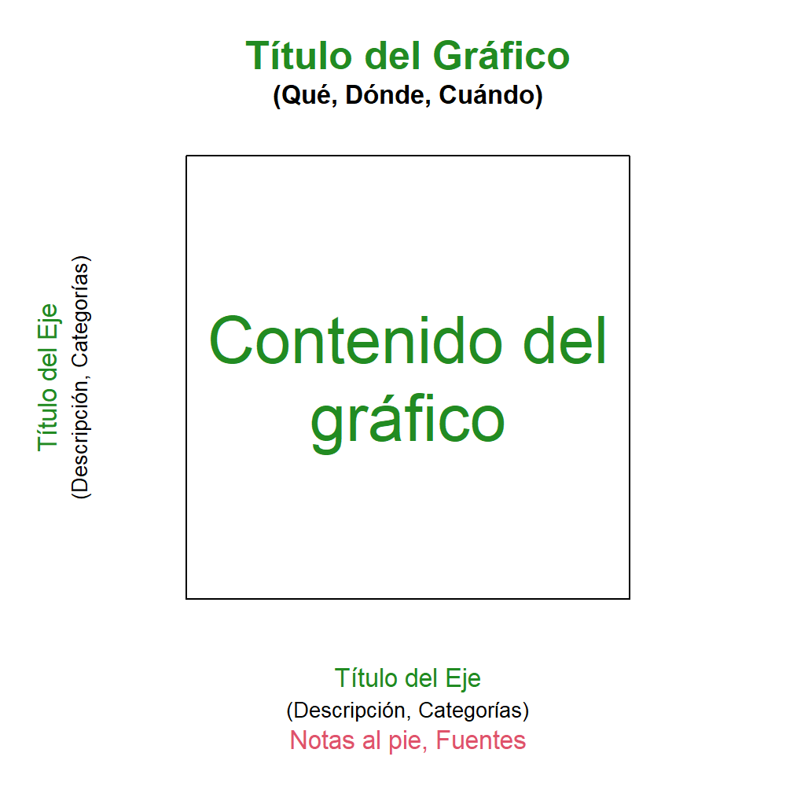
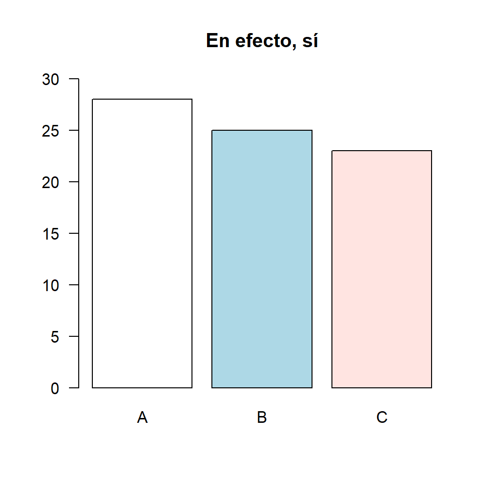
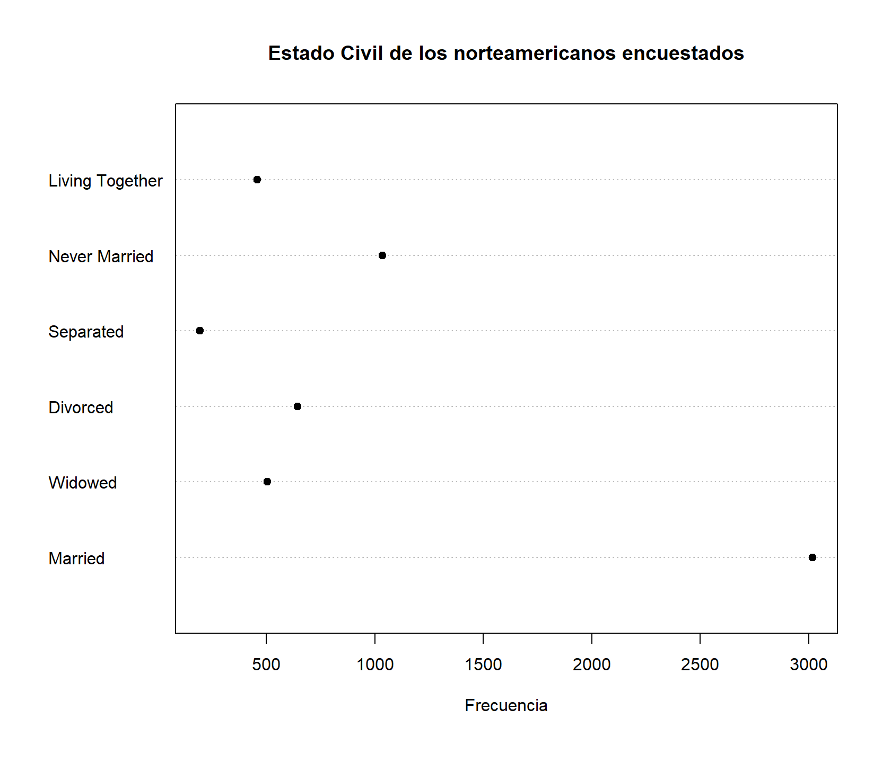
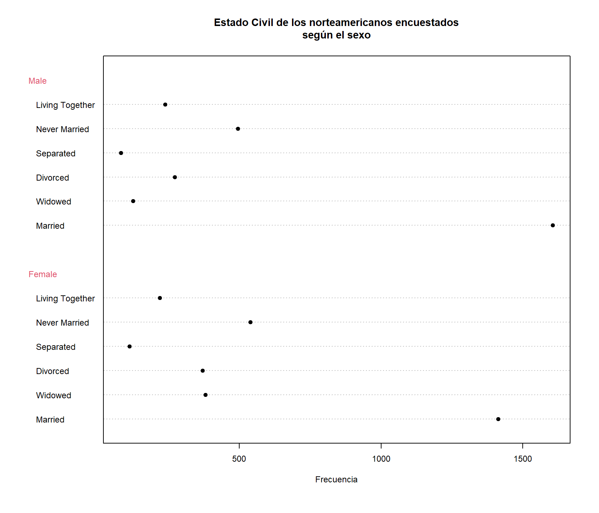
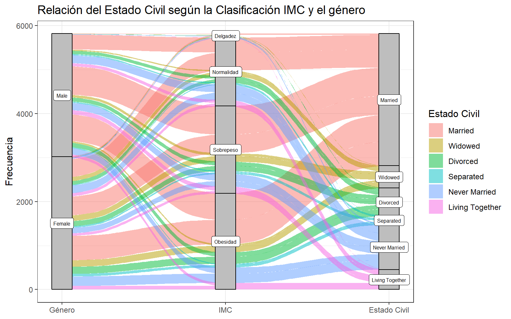
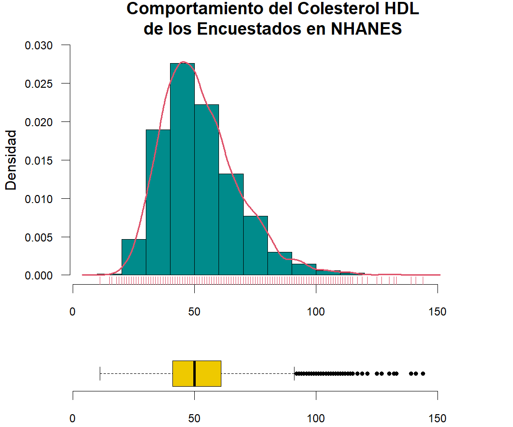

Métodos gráficos para resumir información
Introducción
En la etapa de diseño de la investigación se establece la identificación de variables, la estrategia de recolección de datos de acuerdo al diseño de estudio, el plan de captura y estructuración de la información y finalmente se establece el plan de análisis estadístico.
La primera parte de plan de análisis siempre necesita de la organización y presentación de los resultados, es decir, todo lo correspondiente al análisis descriptivo de los datos. Para esto, se cuenta con una colección de métodos de presentación de información: gráficos, tablas y medidas de resumen. Dado el tipo de variable y sus divisiones corresponde un conjunto de gráficos, tablas y medidas de resumen
Elementos de un gráfico
Para la presentación de la información a través de gráficos, tenga en cuenta que las recomendaciones mínimas para la construcción de un buen gráfico:
Facilidad para comparar e identificar comportamiento de los datos
Lenguaje preciso y claro de tal manera que se eviten confusiones sobre las características de los datos mostrados
Evitar gráficas donde el gran número de categorías, indicadores o variables dificulten su interpretación
Distinción clara de las categorías o rótulos del gráfico
Notación de cifras y de decimales claras
Evitar el uso de abreviaturas
Las siglas/acrónimos deben de ir en mayúsculas y sin puntos intermedios
Aclarar la escala de los ejes

Los errores comunes que se presentan en los gráficos técnicos son:
Falta de títulos, convenciones y etiquetas
Falta de escala en los ejes
Congestionamiento o exceso de información
Escasez de datos
Mala calidad de la impresión
Incluir un eje adicional sin sentido para dar efectos 3D
Gráficos para Variables Cualitativas
En la sección anterior se explicó las clasificaciones de las variables, para el caso de las variables cualitativas se agrupan en Nominales y Ordinales. La construcción de gráficos adecuados para este tipo de variable se basan en la representación de los conteos, si se tiene más de una variable es posible mostrar su relación.
Gráfico de barras
Este gráfico se caracteriza por identificar las categorías o niveles de una variable cualitativa a relacionando la frecuencia de ocurrencia (frecuencia absoluta) a través de barras separadas. Para que el gráfico cobre sentido e interpretación rápida se recomienda que cada barra tenga un color distinto.
Este gráfico también es útil cuando se tiene dos variables categóricas, siempre y cuando los niveles de dicha variable sean pocas para no saturar el gráfico.
Ejemplo
Apilado
Separado
Gráfico de torta
El gráfico de torta muestra por secciones de un círculo las proporciones o frecuencias de las categorías de una variable cualitativa
Este gráfico tiene la dificultad en términos de interpretación, ya que la disposición circular no permite hacer distinciones sencillas sobre la proporcionalidad a menos que la categorías sean claramente dispares
Ejemplo
Torta

Barras

Una opción para reducir la limitación de proporcionalidad en este gráfico es utilizar etiquetas para indicar las proporciones o frecuencias de cada categoría, o bien usar un gráfico de dona.
Ejemplo
Torta
Dona
Diagrama de puntos
Este gráfico también es similar al gráfico de barras, sirve para presentar las frecuencias absolutas o relativas de una variable cualitativa, y muestra un punto que representa el conteo del total de observaciones que hay para cada variable.

Gráfico de mosaico
En muchas ocasiones se tiene más de una variable categórica y un gráfico de barras compuesto no es suficiente para exponer con precisión la información. Para este caso, el gráfico de mosaico permite relacionar más de dos variables para analizar las frecuencias entre los cruces de niveles de las variables categóricas.
Diagrama de Sankey
Este gráfico relaciona las transferencia de frecuencias entre los niveles de varias variables categóricas, también se conoce como Alluvial plot. Lleva el nombre de Sankey por el capitán irlandés Matthew Henry Phineas Riall Sankey quién utilizó este diagrama en 1898 en una publicación sobre la eficiencia energética de la máquina de vapor. El gráfico más famoso de este tipo, y catalogado como el mejor gráfico de la historia, es el diagrama de la invasión napoleónica a Rusia.

Invasión Napoleónica a Ruisa
Siguiendo el ejemplo de las encuestas de las viviendas el resultado es el siguiente.

Gráficos para Variables Cuantitativas
La construcción de gráficos adecuados para este tipo de variable se basan en la representación de las frecuencias por intervalo, la densidad de probabilidad o las ubicaciones en un plano cartesiano, si se tiene más de una variable es posible mostrar su relación.
Histograma
Este gráfico permite visualizar el comportamiento o distribución de una variable cuantitativa, divide la continuidad de la variable en intervalos equidistantes para visualizar las frecuencias por cada intervalo. La diferencia con el gráfico de barras, es que en el histograma las barras se encuentran pegadas unas de otras y se deben poner con el mismo color.
Observe que en el eje opuesto se muestra la frecuencia de ocurrencia del IMC, con este gráfico también podemos ver las frecuencias relativas o densidades que denotan las probabilidades de la variable aleatoria.
Diagrama de ojiva
Este gráfico muestra la frecuencia acumulada, sea absoluta o relativa, de una variable cuantitativa según los intervalos de clases creados en el histograma. Es muy útil para observar la tasa de crecimiento en términos de probabilidad de una variable.
Gráfico densidad acumulada empírica
Este gráfico es similar a la ojiva, pero se diferencia en que hace la evaluación de la distribución acumulada de todos los datos cuantitativos. Es muy útil para calcular probabilidades empíricas.
Gráfico de densidad
Este gráfico es una estimación de la curva característica de una variable continua, la estimación se realiza vía métodos numéricos, así que es una aproximación empírica de la distribución de probabilidad.
El modelamiento de la curva comparte el mismo comportamiento del histograma, en este sentido ambos gráficos están relacionados.
Box-Plot
El gráfico de cajas y bigotes (boxplot) es un diagrama que divide una variable continua en cuartiles, es muy útil para detectar posibles valores atípicos.

boxplot
Este gráfico muestra por cuartiles la distribución de la variable aleatoria, en este sentido está relacionado con otros gráficos que muestran el comportamiento de los datos, como el histograma o la curva de densidad.

Gráficos compuestos
Hasta ahora se han vistos casos para realizar gráficos univariados, y unos cuantos que relacionan tablas de contingencias. Existen varios gráficos compuestos para relacionar más de una variable, ya sean cuantitativas o cualitativas, a continuación se presentan los gráficos más usados para literatura científica.
Para los siguientes ejemplos utilizaremos las bases de datos de Diabetes en los Indígenas Pima publicado por el Instituto Nacional de Diabetes y Enfermedades Digestivas y Renales.
El gráfico de dispersión o scatterplot relaciona dos variables continuas, es útil para evaluar de manera visual la relación entre dos variables en términos de dependencia, sea creciente o decreciente.
Este gráfico se puede mezclar con una variable cualitativa, ya sea para colorear los puntos e identificar los niveles o separar los gráficos, así mismo se puede filtrar la base de datos para mostrar secciones específicas de las mismas.
Los Box-Plot también pueden mezclar variables cualitativas y cuantitativas, ya que se puede separar por los niveles de las categorías y condicionarlas por las mediciones de la variable continua.